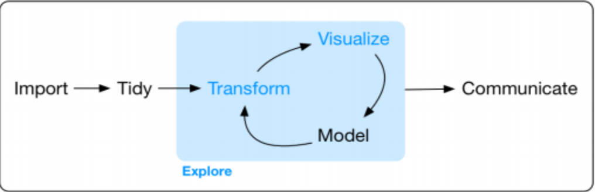

Modelling, Mapping, Cleaning, and Normalizing data

Developed a standard script to remove special characters from data fields and identify duplicate data fields within the header row of the raw data. Browse Github to view code
Understand and implement ETL process in onboarding data, work with third party extractors in performing ETL processes to be accessible by data processors. Build and determine models to logically map, normalize, perform quality checks and review client data sets by follwoing the process below:
Onboard health data into production after data sets have been vetted, perform checks on the data for Consistency, Continuity, Completeness, Validity, Referential Integrity.
Communicate findings from querying health data from production tables to provide insights or investigate issues to generate a report.
Perform analysis and profiling stage by following the process flow down below in the picture to